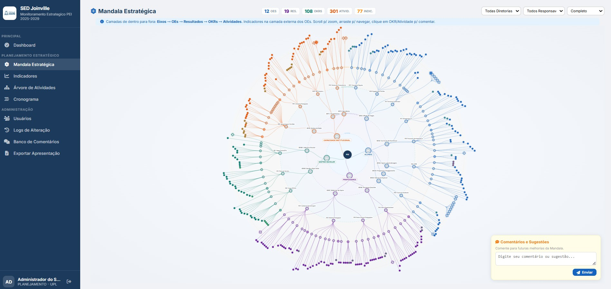
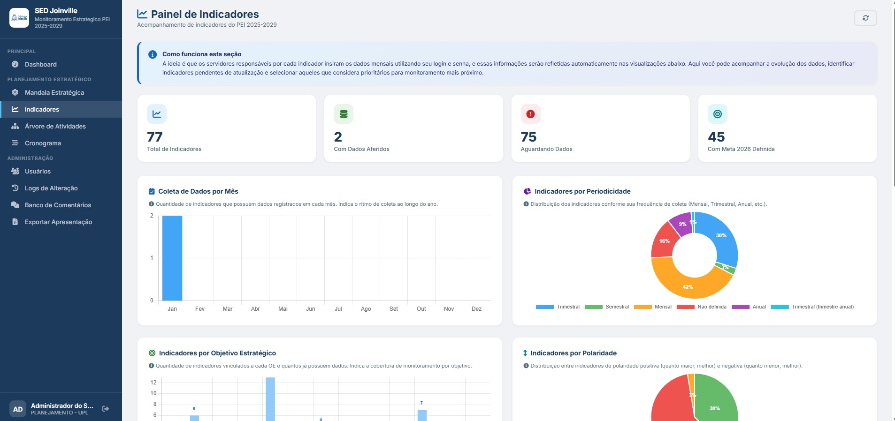

Contexto e Problema
A Secretaria Municipal de Educação de Joinville implementou o Plano Estratégico Institucional (PEI) 2025-2029, estruturado em Objetivos de Impacto, Objetivos Estratégicos, Resultados, OKRs e Atividades distribuídos em quatro eixos: Alunos, Professores, Gestão Escolar e Capacidade Institucional. A gestão demandava um sistema integrado para acompanhar o progresso das metas, monitorar a execução de OKRs e atividades por diretoria e unidade, e consolidar indicadores de desempenho em dashboards acessíveis a diferentes perfis (Secretário, Planejamento e Gerência).
Imagens do Sistema




Solução Desenvolvida
Desenvolvi um sistema web completo em Google Apps Script com arquitetura modular:
- Autenticação e perfis: Sistema de login com três perfis — Secretário (visão geral), Planejamento (acesso total) e Gerência (visão filtrada por diretoria)
- Estrutura PEI: Modelagem de Objetivos de Impacto (OI), Objetivos Estratégicos (OE), Resultados, OKRs e Atividades, com vínculo a 22 abas de resultados por diretoria/unidade (DPE, DIF, DGE, DFI)
- Indicadores e metas: Módulo de indicadores com periodicidade mensal, linhas de base, metas 2026, percentual de evolução e atingimento, integrado à aba IndicadoresMetas da planilha de acompanhamento
- Importação automatizada: Pipeline que importa dados da planilha "Acompanhamento de OKRs e Indicadores 2026" — Sumário, IndicadoresMetas e 22 abas de resultados — com triggers diários (7h, 12h, 17h) para sincronização
- Dashboards interativos: Visão geral com KPIs (atividades concluídas, em andamento, atrasadas), gráficos por eixo, mandala de indicadores e acompanhamento de OKRs por trimestre
- Banco em Google Sheets: Abas OE, RESULTADOS, OKRS, ATIVIDADES, USUARIOS, LOGS, INDICADORES, COMENTARIOS com auditoria de alterações
Bases de Dados Utilizadas
- Planilha principal (banco de dados) — OE, Resultados, OKRs, Atividades, Indicadores
- Planilha "Acompanhamento de OKRs e Indicadores 2026" — Sumário, IndicadoresMetas, 22 abas de resultados (DPE.UIF.R01 a DFI.AVA.R22)
Tecnologias Utilizadas
Resultados e Impacto
O sistema passou a centralizar o acompanhamento do PEI 2025-2029 da Secretaria de Educação de Joinville, permitindo que o Secretário, a equipe de Planejamento e as Gerências acompanhassem metas, OKRs e indicadores em tempo real. A importação automatizada eliminou processos manuais de consolidação e garantiu que os dashboards refletissem os dados atualizados da planilha de acompanhamento. O painel contribui diretamente para o monitoramento sistemático de resultados, avanços e gargalos das políticas educacionais da rede municipal — alinhado ao Produto 3 (Painel de Metas e Resultados) previsto em editais de consultoria em gestão educacional.